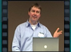
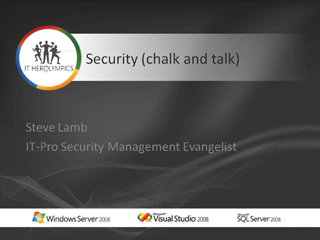

Panel Discussion
Speaker(s):
Keynote: Lancering Windows Server 2008, SQL Server 2008, Visual Studio 2008

 Speaker(s): Michel N'Guettia, Erwin Hartenberg
Speaker(s): Michel N'Guettia, Erwin Hartenberg
Windows Server 2008 Overview
 Speaker(s): Tony Krijnen, Daniel van Soest
Speaker(s): Tony Krijnen, Daniel van Soest
Internet Information Server

 Speaker(s): Fabio Yeon
Speaker(s): Fabio Yeon
SQL Server Overview
 Speaker(s): Gert Drapers
Speaker(s): Gert Drapers
Windows Server 2008 Active Directory

 Speaker(s): John Craddock
Speaker(s): John Craddock
Windows Server Core
 Speaker(s): Sander Berkhouwer
Speaker(s): Sander Berkhouwer
Technical Drilldown on Virtualization in Windows Server 2008

 Speaker(s): Ronald Beekelaar
Speaker(s): Ronald Beekelaar
Windows Server 2008 Terminal Services

 Speaker(s): Martijn Bellaard
Speaker(s): Martijn Bellaard
Security (Chalk and Talk)

Speaker(s): Steve Lamb
Windows Server 2008 Active Directory Drilldown
 Speaker(s): John Craddock
Speaker(s): John Craddock